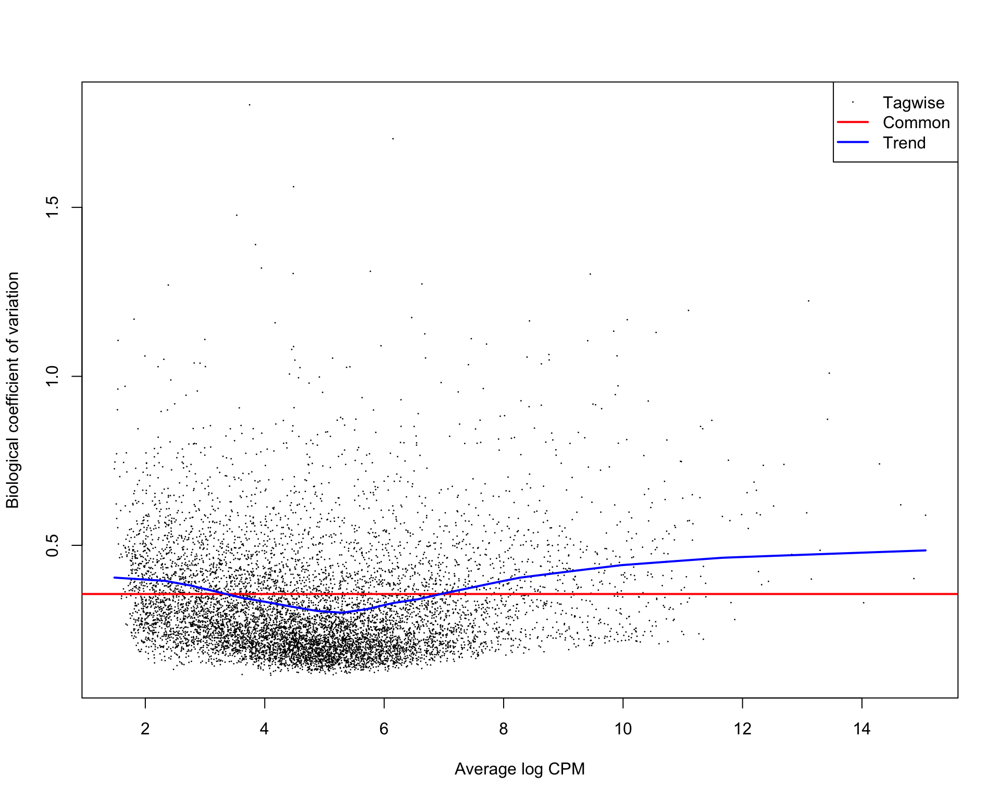

library(edgeR)Loading required package: limmaWarning: package 'limma' was built under R version 3.4.2library(ggplot2)
library(GGally)
library(EDASeq)Loading required package: BiobaseLoading required package: BiocGenericsLoading required package: parallel
Attaching package: 'BiocGenerics'The following objects are masked from 'package:parallel':
clusterApply, clusterApplyLB, clusterCall, clusterEvalQ,
clusterExport, clusterMap, parApply, parCapply, parLapply,
parLapplyLB, parRapply, parSapply, parSapplyLBThe following object is masked from 'package:limma':
plotMAThe following objects are masked from 'package:stats':
IQR, mad, sd, var, xtabsThe following objects are masked from 'package:base':
anyDuplicated, append, as.data.frame, cbind, colMeans,
colnames, colSums, do.call, duplicated, eval, evalq, Filter,
Find, get, grep, grepl, intersect, is.unsorted, lapply,
lengths, Map, mapply, match, mget, order, paste, pmax,
pmax.int, pmin, pmin.int, Position, rank, rbind, Reduce,
rowMeans, rownames, rowSums, sapply, setdiff, sort, table,
tapply, union, unique, unsplit, which, which.max, which.minWelcome to Bioconductor
Vignettes contain introductory material; view with
'browseVignettes()'. To cite Bioconductor, see
'citation("Biobase")', and for packages 'citation("pkgname")'.Loading required package: ShortReadLoading required package: BiocParallelLoading required package: BiostringsLoading required package: S4VectorsLoading required package: stats4
Attaching package: 'S4Vectors'The following object is masked from 'package:base':
expand.gridLoading required package: IRangesLoading required package: XVector
Attaching package: 'Biostrings'The following object is masked from 'package:base':
strsplitLoading required package: RsamtoolsLoading required package: GenomeInfoDbLoading required package: GenomicRangesLoading required package: GenomicAlignmentsLoading required package: SummarizedExperimentLoading required package: DelayedArrayLoading required package: matrixStats
Attaching package: 'matrixStats'The following objects are masked from 'package:Biobase':
anyMissing, rowMedians
Attaching package: 'DelayedArray'The following objects are masked from 'package:matrixStats':
colMaxs, colMins, colRanges, rowMaxs, rowMins, rowRangesThe following object is masked from 'package:Biostrings':
typeThe following object is masked from 'package:base':
applylibrary(utils)
thisPath <- getwd()
beeCounts <- readRDS("../../data/data.Rds")
beeCounts <- as.matrix(beeCounts)
colnames(beeCounts) <- c(paste0(rep("N",12),".",1:12),paste0(rep("V",12),".",1:12))
y <- DGEList(counts=beeCounts)edgeR vignette states that a gene is required to have a count of 5-10 in a library to be considered expressed in that library. Here minLib is equal to 4.01639410^{6}. A CPM of 4 corresponds to a count of ~1 in the minimum number of samples in a group (6). So, I keep only rows that have that. This reduces the number of genes from 15,314 to 8,672.
minLib <- min(y$samples$lib.size)
keep <- rowSums(cpm(y)>4) >= 6
# Number of genes 15,314--> 8,672
y <- y[keep, , keep.lib.sizes=FALSE]Next, I used edgeR normalization.
y <- calcNormFactors(y)Copying Section (3.3.1 in edgeR vignette)
Group = factor(c(rep("N",12), rep("V",12)))
design <- model.matrix(~0+Group, data=y$samples)
colnames(design) <- levels(Group)
y <- estimateDisp(y, design)
plotBCV(y)
fit <- glmFit(y, design)
saveRDS(y[[1]], file="data.Rds")Below we save the DEGs from all pairwise combinations of treatment groups.
allPairs = data.frame(Treatment1 = factor(), Treatment2 = factor(), NumberDEG = numeric(), FirstLarger = numeric(), SecondLarger = numeric())
dataMetrics <- list()
for (i in 1:(ncol(fit)-1)){
for (j in (i+1):ncol(fit)){
contrast=rep(0,ncol(fit))
contrast[i]=1
contrast[j]=-1
lrt <- glmLRT(fit, contrast=contrast)
lrt <- topTags(lrt, n = nrow(y[[1]]))[[1]]
lrt5 <- lrt[which(lrt$FDR<0.05),]
df <- y[[1]][rownames(y[[1]]) %in% rownames(lrt5), c(which(sapply(colnames(y[[1]]), function(x) strsplit(x, "[.]")[[1]][1]) %in% (colnames(fit)[i])), which(sapply(colnames(y[[1]]), function(x) strsplit(x, "[.]")[[1]][1]) %in% (colnames(fit)[j])))]
firstLarger <- length(which(apply(df, 1, function(x) mean(x[1:6]) > mean(x[7:12]))))
secondLarger <- length(which(apply(df, 1, function(x) mean(x[1:6]) < mean(x[7:12]))))
lrtLength <- nrow(lrt5)
allPairs = rbind(allPairs, data.frame(Treatment1 = factor(colnames(fit)[i]), Treatment2 = factor(colnames(fit)[j]), NumberDEG = lrtLength, FirstLarger = firstLarger, SecondLarger = secondLarger))
metrics = cbind(ID = rownames(lrt), lrt)
metrics$ID = as.character(metrics$ID)
dataMetrics[[paste0(colnames(fit)[i], "_", colnames(fit)[j])]] <- metrics
}
}
allPairs <- allPairs[order(allPairs$NumberDEG),]
saveRDS(dataMetrics, file="dataMetrics.Rds")allPairs Treatment1 Treatment2 NumberDEG FirstLarger SecondLarger
1 N V 20 11 9